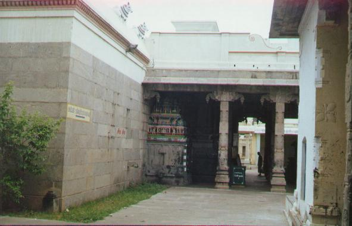

pātirippuliyūr
- Identifier: NA18
- Modern Name (NIC):
- Modern Name (M.I.): tiruppāppuliyūr
- Modern Name (Govt Press): tiruppāppuliyūr
- Modern Name: Tiruppātirippuliyūr
- Modern District & Taluk: kaṭalūr DT (kaṭalūr TK)
- Old administrative location: South Arcot DT (Cuddalore TK)
- Nearby town: Kaṭalūr
- Railway station: Pātirippuliyūr (W: 1km)
- Longit. 79 deg. 46'; Latit. 11 deg. 46' [NA18]
- C.D.Maclean-3: entry: CUDDALORE, p. 242, col. 2,
[Tirpapooliyore [tiruppāppuliyūr], lat. 11deg. 45', long. 79deg. 47']
- Location: according to PK: Naṭu Nāṭu (NA18)
- Name inside hymns:
- Name inside PK: taṇ ār taṇṭali pātirippuliyūr
- Rank inside third volume of PIFI: 200
- Rank inside Civastala Mañcari: 199
- Rank on PY576 map: 64
- Total number of patikam-s: 2
- Campantar: 1 patikam
- Appar: 1 patikam
7 pictures taken during summer 1999 (jlc)





- Patikam 2_121
- Patikam 4_94